자동차정비기사 (2019-08-04 기출문제)
1과목: 일반기계공학
1. 금속재료를 압착하여 강성을 향상하고 기계나 해머로 두들겨서 원하는 모양으로 성형하는 가공법은?
- 단조
- 용접
- 압접
- 납땜
(정답률: 77%)

2. 엔드 저널에서 지름 50㎜의 전동축을 받치고 있는 상태의 허용 베어링압력을 6N/mm2, 저널의 길이를 100㎜라 할 때 최대 베어링 하중은 몇 kN인가?
- 30
- 60
- 300
- 500
(정답률: 39%)
3. 유압회로를 구성할 때 회로 내의 최대 압력을 제어하는 밸브는?
- 셔틀 밸브
- 릴리프 밸브
- 언로드 밸브
- 카운터밸런스 밸브
(정답률: 71%)
4. 고급주철 제조방법 중 Fe-Si 또는 Ca-Si 등을 접종시켜 흑연의 형상을 미세화, 균일화하여 연성과 인성을 증가시키는 주철제조방법은?
- 피보와르스키법
- 란쯔법
- 에멜법
- 미한법
(정답률: 46%)
5. 회전축에 발생하는 진동의 주기는 축의 회전수에 따라 변하며, 이 진동수와 축 자체의 고유진동수가 일치하게 되면 공진현상을 일으켜 축이 파괴되는 현상과 관계가 있는 것은?
- 축의 주응력
- 축의 위험속도
- 축의 인장응력
- 축의 최대 변형률
(정답률: 53%)
6. 배관시스템에서 공동현상(cavitation)발생에 따른 결과로 나타나는 현상이 아닌 것은?
- 소재의 손상
- 기포 발생 저하
- 소음 진동의 발생
- 제어 특성의 저하
(정답률: 67%)
7. 체결용 기계요소 중 조립된 보스(boss)를 축방향으로 이동시킬 수 없는 것은?
- 원뿔 키
- 슬라이딩 키
- 삼각형 세레이션
- 인뻘류트 스플라인
(정답률: 59%)
8. 다음 중 길이를 계측할 수 있는 측정기는?
- 사인바
- 수준기
- 다이얼게이지
- 옵티컬플랫
(정답률: 50%)
9. 물체의 밀도를 순수한 물의 밀도로 나눈 값은?
- 밀도
- 비중
- 비중량
- 비체적
(정답률: 67%)
10. 코일스프링에서 코일의 평균지름을 D, 소선의 지름을 d, 스프링 권수를 n, 스프링에 작용하는 하중을 P, 선재의 전단탄성계수를 G라 하면 스프링 처짐량 ∂를 구하는 식은?
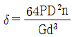
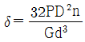
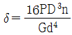
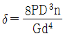
(정답률: 42%)
11. 기밀을 더욱 완전하게 하기 위해 끝이 넓은 끌로 때려 리벳과 판재의 안쪽 면을 완전히 밀착시키는 것은?
- 이음
- 세팅
- 리베팅
- 풀러링
(정답률: 49%)
12. 내접하는 표준 평기어 전동장치에서 잇수가 각각 Z1 = 20, Z2 = 45 이고 모듈이 4 일 때 두 축의 중심거리는 몇 ㎜ 인가?
- 50
- 100
- 130
- 260
(정답률: 31%)
13. 알루미늄에 Cu, Mg, Mn 등의 원소를 첨가하여 기계적 성질을 개선한 고강도 알루미늄 합금은?
- Lo-Ex
- 실루민
- 두랄루민
- 콘스탄탄
(정답률: 66%)
14. 열경화성 플라스틱에 해당되는 것은?
- 페놀(PF)
- 폴리에틸렌(PE)
- 폴리프로필렌(PP)
- 폴리염화비닐(PVC)
(정답률: 51%)
15. 지름 6㎝, 길이 300㎝인 연강봉재에 5000N 의 인장하중이 작용할 때 봉재가 늘어난 길이는 약 몇 ㎜인가? (단, 세로탄성계수는 200㎬이다.)
- 0.015
- 0.027
- 0.030
- 0.⑤4
(정답률: 42%)
16. 물건을 달아 올리거나 운반하는 경우에 사용되는 볼트는?
- 탭 볼트
- 관통 볼트
- 아이 볼트
- 스테이 볼트
(정답률: 67%)
17. 축의 지름이 10㎝ 이고, 분당 120회전을 하는 고정된 축으로부터 1000㎝ 떨어진 단면에서의 비틀림 각이 1/10 라디안 일 때, 이 축에 작용하고 있는 비틀림 모멘트는 몇 kN·㎝인가? (단,
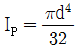
이고, 전단탄성계수 8×106 N/cm2 이다.)- 100π
- 150π
- 200π
- 250π
(정답률: 33%)
18. 미리 가공된 제품의 윤곽이나 드로잉된 제품의 플랜지를 소정의 형상과 치수로 잘라내는 가공 방법은?
- 버링(burring)
- 노칭(notching)
- 트리밍(trimming)
- 구멍뚫기(punching)
(정답률: 59%)
19. 주조하려는 주물과 동일한 모형을 왁스, 파라핀 등으로 만들어 주형재에 파묻고 다진 후 가열로에서 주형을 경화시킴과 동시에 모형재인 왁스, 파라핀을 유출시켜 주형을 완성하는 방법은?
- 셀몰드법
- 다이캐스팅
- 연속주조법
- 인베스트먼트법
(정답률: 49%)
20. 보(Beam)가 휨을 받았을 때, 곡률은 어떻게 변하는가?
- 탄성계수(E)에 비례한다.
- 굽힘강성(EI)에 비례한다.
- 보의 단면적에 비례한다.
- 굽힘모멘트(M)에 비례한다.
(정답률: 53%)
2과목: 기계열역학
21. 압축비가 18인 오토사이클의 효율(%)은? (단, 기체의 비열비는 1.41이다.)
- 65.7
- 69.4
- 71.3
- 74.6
(정답률: 52%)
22. 공기 표준 브레이튼(Brayton) 사이클 기관에서 최고 압력이 500㎪, 최저압력은 100㎪이다. 비열비(k)가 1.4일 때, 이 사이클의 열효율(%)은?
- 3.9
- 18.9
- 36.9
- 20.9
(정답률: 34%)
23. 다음 냉동 사이클에서 열역학 제1법칙과 제2법칙을 모두 만족하는 Q1, Q2, W 는?
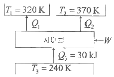
- Q1 = 20kJ, Q2 = 20kJ, W = 20kJ
- Q1 = 20kJ, Q2 = 30kJ, W = 20kJ
- Q1 = 20kJ, Q2 = 20kJ, W = 10kJ
- Q1 = 20kJ, Q2 = 15kJ, W = 5kJ
(정답률: 56%)
24. 그림과 같이 다수의 추를 올려놓은 피스톤이 끼워져 있는 실린더에 들어있는 가스를 계로 생각한다. 초기 압력이 300㎪이고, 초기 체적은 0.⑤m3이다. 피스톤을 고정하여 체적을 일정하게 유지하면서 압력이 200㎪로 떨어질때까지 계에서 열을 제거한다. 이 때 계가 외부에 한 일(kJ)은 얼마인가?
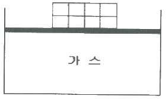
- 0
- 5
- 10
- 15
(정답률: 35%)
25. 체적이 0.5m3인 탱크에, 분자량이 24kg/k㏖인 이상기체 10㎏이 들어있다. 이 기체의 온도가 25℃일 때 압력(㎪)은 얼마인가? (단, 일반기체상수는 8.3143kJ/k㏖·K이다.)
- 126
- 845
- 2066
- 49578
(정답률: 39%)
26. 이상적인 카르노 사이클 열기관에서 사이클당 585.5J의 일을 얻기 위하여 필요로 하는 열량이 1kJ이다. 저열원의 온도가 15℃라면 고열원의 온도(℃)는 얼마인가?
- 422
- 595
- 695
- 722
(정답률: 29%)
27. 두께 10㎜, 열전도율 15W/m·℃인 금속판 두 면의 온도가 각각 70℃와 50℃일 때 전열면 1m2당 1분 동안에 전달되는 열량(kJ)은 얼마인가?
- 1800
- 14000
- 92000
- 162000
(정답률: 36%)
28. 800㎪, 350℃의 수증기를 200㎪로 교축한다. 이 과정에 대하여 운동 에너지의 변화를 무시할 수 있다고 할 때 이 수증기의 Joule-Thomson 계수(K/㎪)는 얼마인가? (단, 교축 후의 온도는 344℃이다.)
- 0.0⑤
- 0.01
- 0.02
- 0.03
(정답률: 38%)
29. 최고온도(TH)와 최저온도(TL)가 모두 동일한 이상적인 가역사이클 중 효율이 다른 하나는? (단, 사이클 작동에 사용되는 가스(기체)는 모두 동일하다.)
- 카르노 사이클
- 브레이튼 사이클
- 스털링 사이클
- 에릭슨 사이클
(정답률: 37%)
30. 표준대기압 상태에서 물 1㎏이 100℃로부터 전부 증기로 변하는 데 필요한 열량이 0.652kJ이다. 이 증발과정에서의 엔트로피 증가량(J/K)은 얼마인가?
- 1.75
- 2.75
- 3.75
- 4.00
(정답률: 25%)
31. 체적이 1m3인 용기에 물이 5㎏ 들어 있으며 그 압력을 측정해보니 500㎪이었다. 이 용기에 있는 물 중에 증기량(㎏)은 얼마인가? (단, 500㎪에서 포화액체와 포화증기의 비체적은 각각 0.001093m3/㎏, 0.37489m3/㎏이다.)
- 0.0⑤
- 0.94
- 1.87
- 2.66
(정답률: 31%)
32. 냉동효과가 70lW인 냉동기의 방열기 온도가 20℃, 흡열기 온도가 -10℃이다. 이 냉동기를 운전하는데 필요한 압축기의 이론 동력(kW)은 얼마인가?
- 6.02
- 6.98
- 7.98
- 8.99
(정답률: 34%)
33. 국소 대기압력이 0.099㎫일 때 용기 내 기체의 게이지 압력이 1㎫이었다. 기체의 절대압력(㎫)은 얼마인가?
- 0.901
- 1.099
- 1.135
- 1.275
(정답률: 42%)
34. 열역학적 상태량은 일반적으로 강도성 상태량과 용량성 상태량으로 분류할 수 있다. 강도성 상태량에 속하지 않는 것은?
- 압력
- 온도
- 밀도
- 체적
(정답률: 47%)
35. 질량 4㎏의 액체를 15℃에서 100℃까지 가열하기 위해 714kJ의 열을 공급하였다면 액체의 비열(kJ/㎏·K)은 얼마인가?
- 1.1
- 2.1
- 3.1
- 4.1
(정답률: 37%)
36. 배기량(displacement wolume)이 1200cc, 극간체적(clearance volume)이 200cc인 가솔린 기관의 압축비는 얼마인가?
- 5
- 6
- 7
- 8
(정답률: 44%)
37. 공기 3㎏이 300K에서 650K까지 온도가 올라갈 때 엔트로피 변화량(J/K)은 얼마인가? (단, 이 때 압력은 100㎪에서 550㎪로 상승하고, 공기의 정압비열은 1.0⑤kJ/㎏·K, 기체상수는 0.287kJ/㎏·K이다.)
- 712
- 863
- 924
- 966
(정답률: 24%)
38. 증기가 디퓨저를 통하여 0.1㎫, 150℃, 200m/s의 속도로 유입되어 출구에서 50m/s의 속도로 빠져나간다. 이 때 외부로 방열된 열량이 500J/㎏일 때 출구 엔탈피(kJ/㎏)는 얼마인가? (단, 입구의 0.1㎫, 150℃상태에서 엔탈피는 2776.4kJ/㎏)는 얼마인가?
- 2751.3
- 2778.2
- 2794.7
- 2812.4
(정답률: 44%)
39. 5㎏의 산소가 정압하에서 체적이 0.2m3에서 0.6m3로 증가했다. 이 때의 엔트로피의 변화량(kJ/K)은 얼마인가? (단, 산소는 이상기체이며, 정압비열은 0.92kJ/㎏·K 이다.)
- 1.857
- 2.746
- 5.⑤4
- 6.507
(정답률: 27%)
40. 냉동기 팽창밸브 장치에서 교축과정을 일반적으로 어떤 과정이라고 하는가? (단, 이 때 일반적으로 운동에너지 차이를 무시한다.)
- 정압과정
- 등엔탈피 과정
- 등엔트로피 과정
- 등온과정
(정답률: 41%)
3과목: 자동차기관
41. 흡입밸브의 닫힘 시기에 관한 설명 중 틀린 것은?
- 저속 운전영역에서 흡입밸브를 늦게 닫으면 혼합가스가 역류한다.
- 저속 운전영역에서 흡입밸브를 빨리 닫으면 혼합기가 희박해진다.
- 고속 운전영역에서 흡입밸브를 빨리 닫으면 회전력과 최고 출력이 낮아진다.
- 고속 운전영역에서 흡입밸브를 늦게 닫으면 흡입공기의 관성을 충분히 활용할 수 있다.
(정답률: 40%)
42. CNG(Compressed Natural Gas) 차량에서 연료량 조절밸브 어셈블리 구성품이 아닌 것은?
- 가스압력센서
- 가스온도센서
- 연료온도조절기
- 저압가스차단밸브
(정답률: 46%)
43. 가솔린엔진의 전자제어 연료분사장치에서 공회전속도 제어장치의 구동 조건이 다른 것은?
- 에어컨 컴프레서가 구동될 때
- 파워스티어링 펌프가 구동할 때
- 자동변속기 레버가 D레인지에 위치할 때
- 스로틀포지션 센서의 닫힘 신호가 입력될 때
(정답률: 42%)
44. 엔진에서 베어링 스프레드를 두는 이유로 틀린 것은?
- 베어링 조립 시 베어링이 캡에서 이탈됨을 방지한다.
- 작은 힘으로 눌러 끼워 베어링이 제자리에 밀착되게 한다.
- 베어링 캡 조립 시 베어링과 하우징 사이에 간극을 유지한다.
- 베어링 조립에서 크러시가 압축됨에 따라 안쪽으로 찌그러지는 것을 방지한다.
(정답률: 40%)
45. 자동차 엔진의 윤활장치에 대한 설명으로 틀린 것은?
- 윤활유는 마찰과 마모를 저감하는 작용을 한다
- 엔진 윤활유의 분류는 SAE점도 분류, API 분류가 있다.
- 엔진에 있어서 오일소모의 주원인은 윤활유의 자연 증발에 의한 것이다.
- 윤활이란 두 섭동면 사이에 유막을 형성하여 고체마찰을 유체마찰로 바꾸어주는 작용을 말한다.
(정답률: 59%)
46. 흡·배기 밸브가 모두 실린더 헤드에 배열된 방식은?
- F-head engine
- I-head engine
- L-head engine
- T-head engine
(정답률: 54%)
47. 연료의 저위발열량이 11000㎉/㎏, 매 시간당 연료소비율이 110㎏/h, 도시마력이 500PS, 기계효율이 0.8인 엔진의 제동열효율은 약 얼마인가?
- 10.5%
- 20.9%
- 33.4%
- 42.3%
(정답률: 21%)
48. 흡기다기관의 진공도 시험으로 알아낼 수 있는 사항이 아닌 것은?
- 연료회로의 불량
- 압축 압력 누설 유무
- 실린더 헤드 개스킷의 불량
- 밸브 면과 시트와의 밀착 불량
(정답률: 61%)
49. 디젤엔진에서 노킹에 가장 큰 영향을 미치는 구간은?
- 착화지연구간
- 급격연소구간
- 제어연소구간
- 후기연소구간
(정답률: 59%)
50. 스로틀포지션 센서의 입력값이 5V일 때, 정상적인 출력값으로 틀린 것은?
- 0.5~1.0V
- 1.5~2.0V
- 3.5~4.0V
- 5.5~6.0V
(정답률: 53%)
51. 디젤엔진의 고압 연료분사 장치에서 분사파이프의 필요 조건이 아닌 것은?
- 분사 파이프의 길이는 가능한 길어야 한다.
- 양단의 연결부로부터 누설이 없어야 한다.
- 분사 파이프의 굽힘부 반경은 완만하여야 한다.
- 연료의 고압에 의해 파이프가 팽창되지 않아야 한다.
(정답률: 59%)
52. 블로 다운(blow down) 현상의 설명으로 옳은 것은?
- 배기행정 초기에 배기가스가 급격하게 배출되는 현상이다.
- 압축행정 시 피스톤과 실린더 사이에서 가스가 누출되는 현상이다..
- 폭발행정 시 밸브와 밸브시트 사이에서 연소가스가 누출되는 현상이다.
- 배기에서 흡입행정 시 상사점 부근에서 흡·배기 밸브가 동시에 열려있는 현상이다.
(정답률: 46%)
53. 전자제어 가솔린엔진의 점화시기 제어에 영향을 주는 센서가 아닌 것은?
- 수온 센서
- 차압 센서
- 노킹 센서
- 스로틀 포지션 센서
(정답률: 54%)
54. 모터식 연료펌프 내부에서 발생하는 연료압력의 맥동을 흡수하기 위하여 부착한 것은?
- 사일런서
- 체크 밸브
- 릴리프 밸프
- 연료 압력 조절기
(정답률: 50%)
55. 엔진 회전수가 3000rpm, 피스톤의 평균속도가 5m/s일 대 엔진의 행정은 몇 ㎜인가?
- 50
- 60
- 80
- 90
(정답률: 30%)
56. 엔진의 압축비를 나타낸 것은?
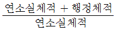
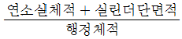
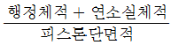
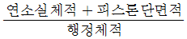
(정답률: 49%)
57. 삼원촉매장치의 담체 분류가 아닌 것은?
- 구슬형
- 플랫폼형
- 금속 일체형
- 세라믹 일체형
(정답률: 41%)
58. 전자제어 가솔린엔진에서 비동기 분사에 대한 설명으로 옳은 것은?
- 산소센서의 신호에 따라 분사하는 방식이다.
- 엔진 회전수와 흡입 공기량에 비례하여 분수하는 것을 말한다.
- 크랭크 각에 상관없이 급가속 시에 분사되는 일시적인 분사이다.
- 급감속할 때 연료를 차단하여 연료를 절약하기 위한 보조 분사이다.
(정답률: 50%)
59. 과급장치에서 인터쿨러의 필요성에 대한 설명으로 옳은 것은?
- 흡입공기의 예열을 통한 연소효율 향상
- 공기밀도의 증가를 통한 충진효율의 향상
- 과급장치의 냉각을 통한 기계효율의 향상
- 과급공기의 냉각을 통한 정미열효율의 향상
(정답률: 46%)
60. 자동차엔진에서 점화시기를 결정하는 데 고려햐애 할 사항이 아닌 것은?
- 연소가 일정하게 일어나도록 한다.
- 인접한 실린더에 점화하도록 한다.
- 크랭크축에 비틀림 진동이 일어나지 않도록 한다.
- 혼합기가 각 실린더에 균일하게 분배되도록 한다.
(정답률: 64%)
4과목: 자동차새시
61. 홀드(hold)기능이 있는 자동변속기 차량에서 홀드 모드와 거리가 먼 것은?
- 추월이나 가속 시
- 2단으로 출발 가능
- 미끄러운 노면에서 출발 시
- 굴곡로에서 빈번한 변속 방지
(정답률: 55%)
62. 차량이 평탄한 포장도로를 90㎞/h로 주행하고 있다. 이때 공기저항은 약 몇 kgf인가? (단, 전면투영면적 = 2m2, 공기저항계수 = 0.025, 차량의 총 중량 = 1500kgf이다.)
- 11.25
- 21.25
- 31.25
- 41.25
(정답률: 19%)
63. TCS(Traction Control System)장치의 추적제어에 대한 설명으로 틀린 것은?
- 가속페달의 조작빈도를 감소시켜 선회능력을 향상시킨다
- 선회 가속 시 안정성을 확보하여 주행성능을 향상시킨다.
- 조향각속도센서 및 휠스피드센서의 출력값으로부터 데이터를 수집한다.
- 차량속도와 휠스피드센서의 출력값으로부터 구동바퀴의 미끄럼 비율을 판단한다.
(정답률: 25%)
64. 자동차가 72㎞/h로 주행하다가 144㎞/h로 증속하는데 4초 걸렸다면 평균가속도는 약 몇 ㎨ 인가?
- 2
- 3
- 4
- 5
(정답률: 23%)
65. CVT(무단변속기)의 특징으로 틀린 것은?
- 연료차단 기간이 짧아 연비가 향상된다.
- 토크 또는 배기량이 큰 차량에는 적용이 어렵다.
- 부품의 정밀도가 높아 가격이 비교적 고가이다.
- 열효율이 높은 조건으로 주행할 수 있어 연비가 향상된다.
(정답률: 34%)
66. 타이어와 노면사이에서 발생하는 마찰력이 아닌 것은?
- 항력
- 횡력
- 구동력
- 선회력
(정답률: 34%)
67. 전자제어 제동장치에서 제동안전장치가 아닌 것은?
- BAS(Brake Assist System)
- ABS(Anti lock Brake System)
- TCS(Traction Control System)
- EBD(Electronic Brake force Distribution)
(정답률: 58%)
68. 벨트 방식 CVT(무단변속기)의 발진 장치에 따른 분류로 틀린 것은?
- 유체클러치 방식
- 토크컨버터 방식
- 습식 다판 클러치 방식
- 전자 분말 클러치 방식
(정답률: 32%)
69. 차륜정렬에서 정의 캠버를 주면 바퀴는 바깥쪽으로 나가게 된다. 이때 바퀴를 직진방향으로 진행하게 하는 앞바퀴 정렬은?
- 토인
- 캠버
- 캐스터
- 킹핀 경사각
(정답률: 48%)
70. ABS 장치의 고장진단 시 경고등의 점등에 관한 설명 중 틀린 것은?
- 점화스위치 ON 시 점등되어야 한다.
- ABS 컴퓨터 고장발생 시에는 소등된다.
- ABS 컴퓨터 커넥터 분리 시 점등되어야 한다.
- 정상 시 ABS 경고등은 엔진 시동 후 일정시간 점등되었다가 소등된다.
(정답률: 54%)
71. 수동변속기 차량에서 기어 변속 시 클러치 차단이 불량한 원인으로 거리가 먼 것은?
- 클러치 마스터 실린더의 피스톤 컵이 파손되었다.
- 릴리스 베어링이나 릴리스 포크가 마모되었다.
- 클러치 페달의 자유간극이 과대하다.
- 클러치판이나 압력판이 마모되었다.
(정답률: 33%)
72. 유압 브레이크 회로 내의 잔압을 두는 목적과 관계가 없는 것은?
- 베이퍼록 방지
- 페이드현상 방지
- 브레이크 작동 지연 방지
- 휠실린더 오일 누유 방지
(정답률: 46%)
73. 차량의 주행 승차감을 개선하기 위한 방법이 아닌 것은?
- 현가장치의 마찰 감소
- 현가장치 장착위치 개선
- 서스펜션 스트로크량의 축소
- 스프링 상수나 감쇠계수의 튜닝
(정답률: 53%)
74. 주행 중 조향핸들이 한쪽으로 쏠리는 원인으로 틀린 것은?
- 조향기어 백래시 불량
- 앞바퀴 얼라이먼트 불량
- 타이어 공기압력 불균일
- 앞 차축 한쪽의 현가스프링 파손
(정답률: 59%)
75. 자동변속기 차량의 토크컨버터에서 출발 시 토크증대가 되도록 스테이터를 고정시켜주는 것은?
- 오일 펌프
- 가이드 링
- 펌프 임펠러
- 원웨이 클러치
(정답률: 52%)
76. 자동변속기에서 유압라인 압력을 측정하였더니 모든 위치에서 규정값보다 낮게 측정되었을때의 원인으로 적절하지 않은 것은?
- 오일량 부족
- 오일 필터 오염
- 압력조절밸브 결함
- 원웨이 클러치 결함
(정답률: 46%)
77. 수동변속기의 상시물림방식에 대한 설명으로 틀린 것은?
- 주축상의 기어는 부축 기어와 맞물려 있다.
- 도그 클러치(또는 클러치 기어)로 기어의 회전을 주축에 전달하는 역할을 한다.
- 변속 시 부축에서 공회전하고 있는 기어 안쪽의 도그 클러치에 끼워져 있다.
- 기어 자체를 이동시켜서 변속하지 않기 떄문에 기어의 마모 및 소음이 비교적 적다.
(정답률: 42%)
78. 운행차 정기검사에서 엔진 배기소음 측정 시 검사방법에 대한 설명이다. ( )에 알맞은 것은?
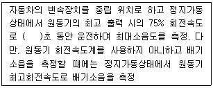
- 2
- 3
- 4
- 5
(정답률: 39%)
79. 전자제어 현가장치에서 안티 다이브 기능에 대한 설명으로 옳은 것은?
- 제동 시 노우즈 다운을 방지하는 기능이다.
- 급발진 시 노우즈 업을 방지하는 기능이다.
- 급선회 시 차량이 전복되는 것을 방지하는 기능이다.
- 조향 바퀴의 접지력 향상으로 슬립을 방지하는 기능이다.
(정답률: 51%)
80. 자동차 제동장치에서 디스크 브레이크의 종류가 아닌 것은?
- 캘리퍼 부동형
- 캘리퍼 고정형
- 디스크 부동형
- 디스크 고정형
(정답률: 37%)
5과목: 자동차전기
81. 다음 그림과 같이 우측 후진등을 점검할 때, R09 커넥터 3번 단자에 연결된 배선 색상은?
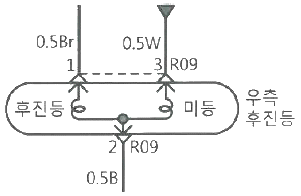
- 갈색
- 흰색
- 검정색
- 파랑색
(정답률: 58%)
82. 자동차소음과 암소음의 측정치 차이가 5㏈인 경우 보정치로 적절한 것은?
- 1㏈
- 2㏈
- 3㏈
- 4㏈
(정답률: 45%)
83. 하이브리드 자동차의 하이브리드 모터 취급 시 유의사항으로 틀린 것은?
- 작업하기 전 반드시 고전압을 차단하여 안전을 확보해야 한다.
- 고전압에 대한 방전 여부를 측정할 때에는 절연장갑을 착용할 필요가 없다.
- 차량 이그니션 키를 OFF 상태로 하고, 1분이 지난 후 방전이 된 것을 확인하고 작업한다.
- 방전여부는 파워케이블의 커넥터 커버 분리 후 전압계를 사용하여 각 상간 전압이 0V인지 확인한다.
(정답률: 57%)
84. 가솔린엔진에서 점화시기 제어 시 필요하지 않는 센서 신호는?
- 엔진 회전수
- 산소센서의 전압
- 엔진 냉각수 온도
- 연소실에 흡입되는 공기온도
(정답률: 43%)
85. 자동차 전기장치의 구비조건으로 틀린 것은?
- 배선 저항은 작고, 커넥터의 접촉저항이 커야 한다.
- 고온과 저온의 온도변화에 따른 작동이 확실하여야 한다.
- 부하의 변동에 따른 전압변동이 있어도 확실한 작동이 이루어져야 한다.
- 진동이나 충격에 강하고 먼지, 습기, 비, 바람에 대한 내구성이 커야 한다.
(정답률: 59%)
86. VDC(Vehicle Dynamic Control)시스템에 사용되는 센서가 아닌 것은?
- 노크 센서
- 조향각 센서
- 휠 속도 센서
- 요레이트 센서
(정답률: 56%)
87. 배터리의 충전 상태를 표현한 것은?
- SOC(State Of Charge)
- SOH(State Of Health)
- PRA(Power Relay Assembly)
- BMS(Battery Management System)
(정답률: 53%)
88. 경음기가 완전 작동하지 않는다. 고장원인으로 적절하지 않은 것은?
- 혼 진동판 균열
- 배터리 터미널의 탈거
- 혼 스위치 커넥터 탈거
- 메인 휴즈 또는 혼 퓨즈 불량
(정답률: 58%)
89. 자동차 전기 배선에 대한 설명으로 틀린 것은?
- 배선의 지름이 증가하면 저항 값은 줄어든다.
- 배선의 길이가 2배로 증가하면 저항 값도 2배로 증가한다
- 배선의 지름을 2배로 증가시키면 저항 값은 1/3로 감소한다
- 보통의 금속(구리)은 일반적으로 온도 상승에 따라 저항도 증가한다.
(정답률: 43%)
90. 직류발전기와 비교한 교류발전기의 특징으로 틀린 것은?
- 소형경량이고 출력도 크다.
- 저속에서의 발전 성능이 양호하다.
- 소모품이 적고 기계적 내구성이 우수하다.
- 전류제한기 및 전압조정기가 필요하지 않다.
(정답률: 51%)
91. 전자제어 가솔린엔진의 점화장치에서 크랭킹시 점화코일에 고전압이 유기되지 않을 경우 가장 먼저 점검해야 할 부품은?
- 노크 센서
- 캠축 포지션 센서
- 크랭크 포지션 센서
- 매니폴드 압력 센서
(정답률: 59%)
92. 점화 플러그에 대한 설명으로 틀린 것은?
- 점화플러그의 자기청정 온도는 500 ~ 600℃이다.
- 냉형 점화플러그는 저속 저부하용 엔진에 사용된다.
- 혼합가스의 혼합비는 점화플러그 방전전압에 영향을 준다.
- 일반적인 점화플러그의 전극은 니켈-망간 합금을 사용한다.
(정답률: 50%)
93. 점화시기 조정이 가능한 배전기 타입의 가솔린엔진에서 초기 점화시기의 점검 및 조치 방법으로 옳은 것은?(오류 신고가 접수된 문제입니다. 반드시 정답과 해설을 확인하시기 바랍니다.)
- 점화시기 점검은 300rpm 이상에서 한다.
- 3번 고압케이블에 타이밍 라이트를 설치하고 점검한다.
- 공회전 상태에서 기본 점화시기를 고정한 후 타이밍 라이트로 확인한다.
- 크랭크 풀리의 타이밍 표시가 일치하지 않을 때는 타이밍 벨트를 교환해야 한다.
(정답률: 50%)
94. 하이브리드 자동차에서 고전압 장치 정비 시 고전압을 해제하는 것은?
- 전류 센서
- 배터리 팩
- 프리차저 저항
- 안전 스위치(안전 플러그)
(정답률: 58%)
95. 에어컨의 고장 현상과 원인의 연결이 적절하지 않은 것은?
- 풍량 부족 - 벨트 헐거움
- 시원하지 않음 - 냉매 부족
- 콘덴서 팬이 회전하지 않음 - 모터 불량
- 냉매압축기 작동하지 않음 – 압축기클러치 불량
(정답률: 49%)
96. 어느 전선의 권선 저항을 측정하였더니 0.2MΩ 이었다. 500V의 전압을 가할 때 누설전류는 몇 mA 인가?
- 0.25
- 2.5
- 25
- 250
(정답률: 29%)
97. 자동차에서 암전류를 측정하는 방법으로 틀린 것은?
- 측정 전 모든 전기장치를 OFF하고 문을 닫는다.
- 배터리(-)터미널을 탈거한 후 전류계를 회로와 직렬로 연결한다.
- 측정하려는 전율 값이 불확실할 때는 전류계를 높은 범위에서 낮은 범위로 조정하며 측정한다.
- 전류계 적색프로브(+)는 배터리(+)케이블에 연결, 흑색프로브(-)는 배터리(-)터미널에 연결한다.
(정답률: 49%)
98. 하이브리드 자동차의 리튬이온 폴리머 배터리에서 셀의 균형이 깨지고 셀 충전용량불일치로 인한 사항을 방지하기 위한 제어는?
- 셀 그립 제어
- 셀 서지 제어
- 셀 펑션 제어
- 셀 밸런싱 제어
(정답률: 59%)
99. 가솔린 엔진에서 점화계통에 대한 설명으로 틀린 것은?
- 노킹이 발생하면 점화시기를 지각시킨다.
- 점화시기가 늦으면 연료소비율이 상승한다.
- 혼합기가 희박하면 점화지연기간이 짧아진다.
- 엔진회전수가 증가하면 점화시기는 진각된다.
(정답률: 41%)
100. 카메라로 주행차량의 전방영상을 촬영한 뒤 영상처리를 거쳐 차선을 인식하여 경보해주는 장치는?
- 위험속도 방지장치
- 적응순항 제어장치
- 차간거리 경보장치
- 차선이탈 경보방지
(정답률: 54%)